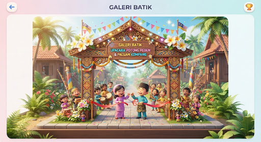
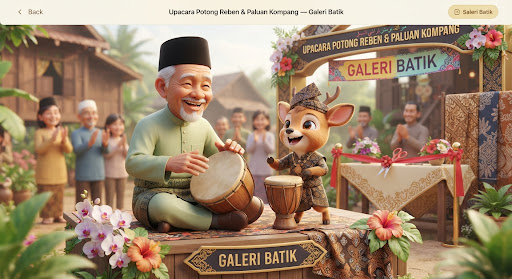

celebration
Upacara Rasmi Diraja
Galeri Batik Pelangi
100% Sedia 🎉
✨
🎋
🏵️
✨
🎋
🏵️
🌸
🌼
✨
festival Pintu Gerbang Seri Kenanga • KSSR Tahun 1

🎀
✨
touch_app Sentuh gunting atau simpul reben emas di atas!
music_note
Palu Kompang Berirama
Ikuti tempo paluan cilik
0
Rentak

Pasukan Cilik Tok Wan
🥁
"Palu berselang-seli anak-anak wira! Biar meriah satu Lembah Rimba Kenanga!"
sync
Sedia memalu bersama!
🧕
"Bismillahirahmanirahim! Galeri Batik Pelangi kini rasmi dibuka untuk seluruh anak bangsa Kampung Wira!"
— Cikgu Merbok & Tok Wan
military_tech
Hadiah Keraian Diraja
Dibuka! 🎁
✂️
Gunting Emas
Koleksi Beg
⭐
🪙
+100 Syiling
+50 Bintang
🎨
Corak Sulung
Batik Bunga